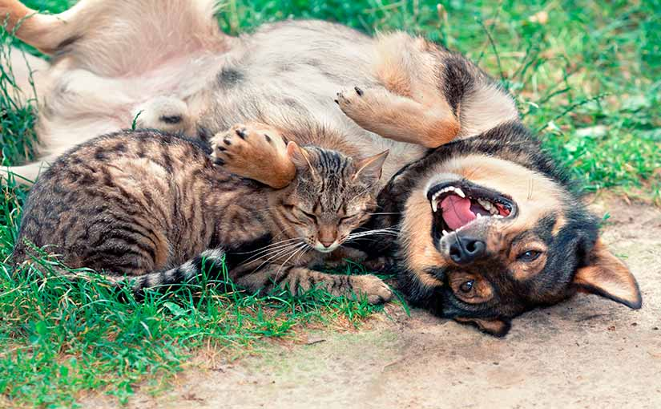

Tiempo, paciencia y dedicación

Nuestro compañero va a necesitar de nuestra entrega múltiples veces al día, a lo largo de toda su vida.
Comer:
De cachorros comen 3 veces al día, mientras que adultos pueden comer en 2 tomas si hablamos de perros.Los
gatos suelen preferir comer de manera intermitente pequeñas porciones a lo largo del día.
Jugar:
a toda edad es recomendable poder dedicar un rato de juego juntos para fomentar el entretenimiento y
estrechar su vínculo.
Pasear:
un paseo diario de al menos 30 minutos es fundamental para que nuestro perro reciba estímulos externos y
pueda distenderse. Tener el compromiso de pasear a nuestro perro nos ayuda a ser menos sedentarios y a salir a
respirar aire fresco para distendernos de nuestro día.
Tomar clases de comportamiento:
creemos que aprender cómo comunicarnos con nuestro nuevo amigo es fundamental para una convivencia exitosa.
Recomendamos ampliamente dedicar tiempo a estudiar, leer o asistir a clases de comportamiento especializadas en
perros o gatos.